AC130 media
About page, top to bottom (34 pictures). Plain text list: about-order.txt
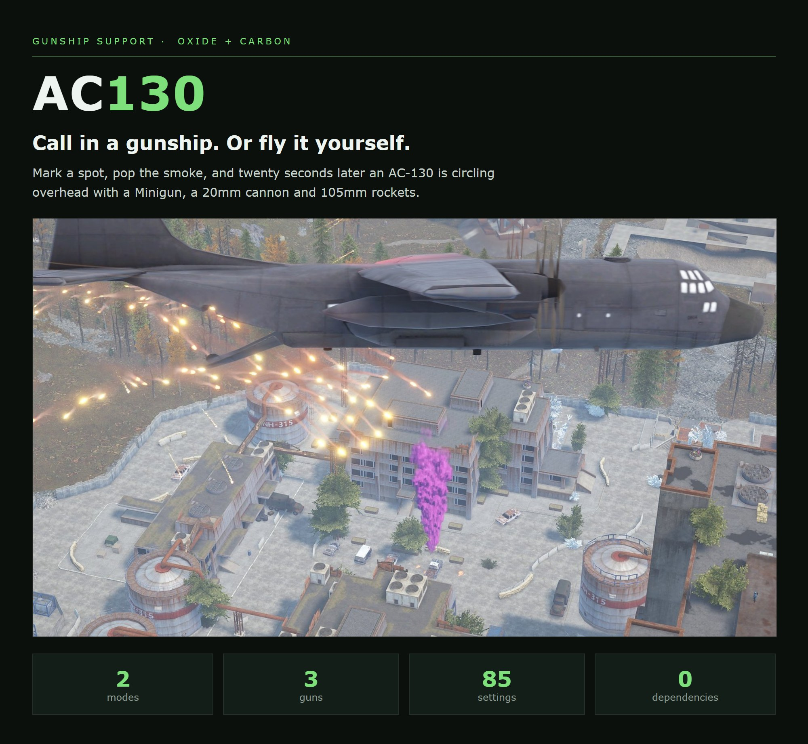
https://yanoee.github.io/ac130-media/about3/00-hero.jpg
https://yanoee.github.io/ac130-media/clips/flyby-close.webphttps://yanoee.github.io/ac130-media/banners/divider.png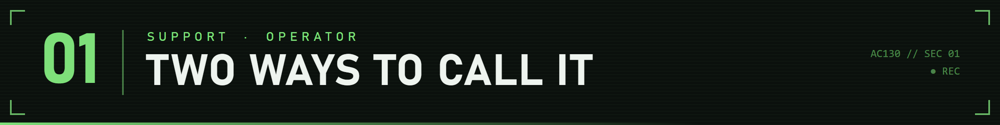
https://yanoee.github.io/ac130-media/banners/01-two-ways-to-call-it.png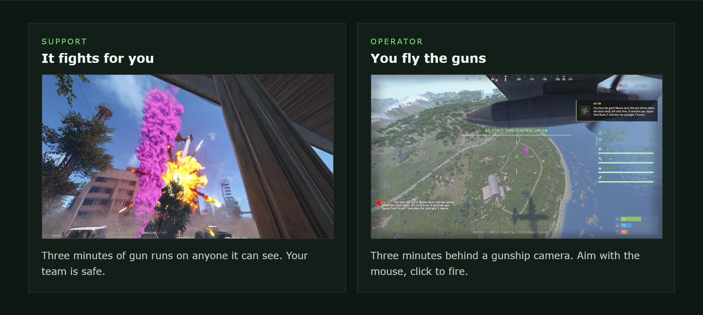
https://yanoee.github.io/ac130-media/about3/01-modes.jpg
https://yanoee.github.io/ac130-media/clips/support-run.webphttps://yanoee.github.io/ac130-media/banners/divider.png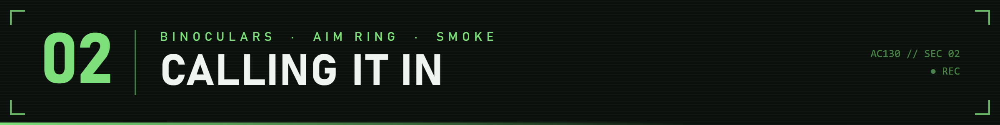
https://yanoee.github.io/ac130-media/banners/02-calling-it-in.png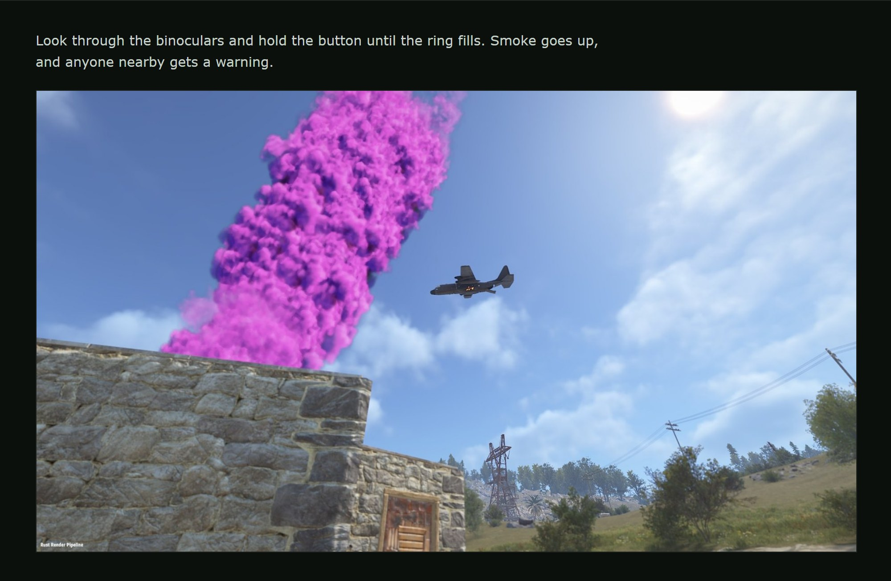
https://yanoee.github.io/ac130-media/about3/02-calling.jpghttps://yanoee.github.io/ac130-media/banners/divider.png
https://yanoee.github.io/ac130-media/banners/03-operator-controls.png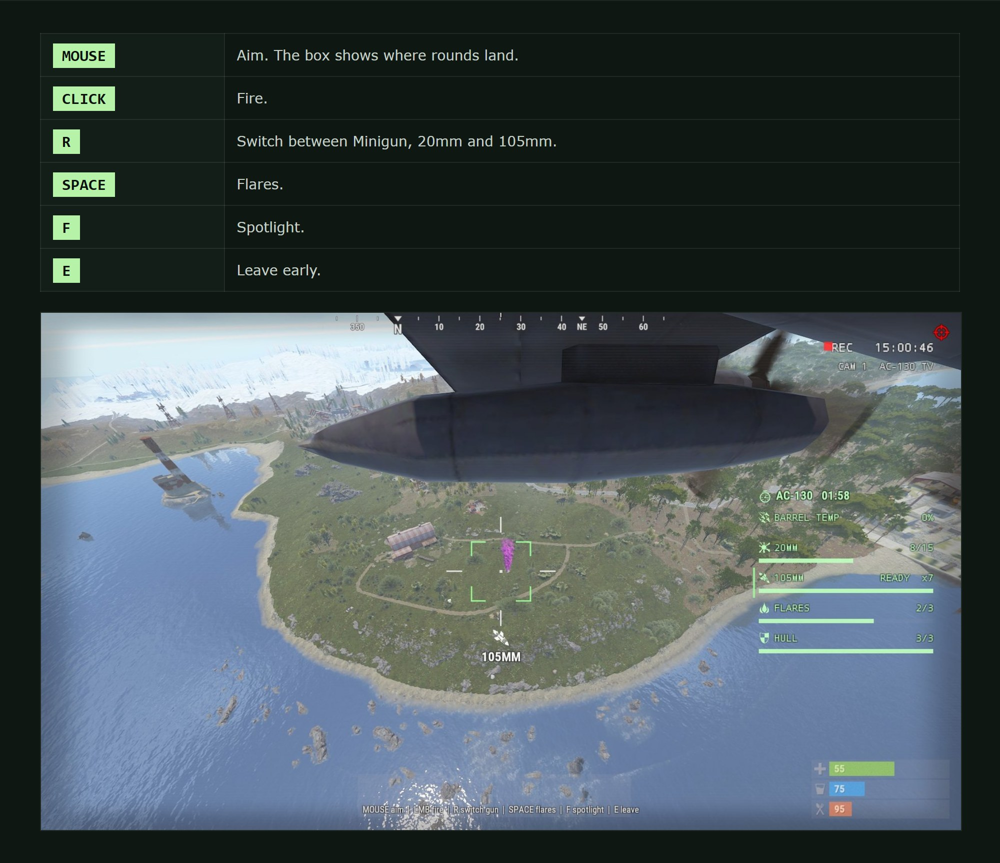
https://yanoee.github.io/ac130-media/about3/03-operator.jpg
https://yanoee.github.io/ac130-media/clips/operator-105mm.webphttps://yanoee.github.io/ac130-media/banners/divider.png
https://yanoee.github.io/ac130-media/banners/04-shoot-it-down.png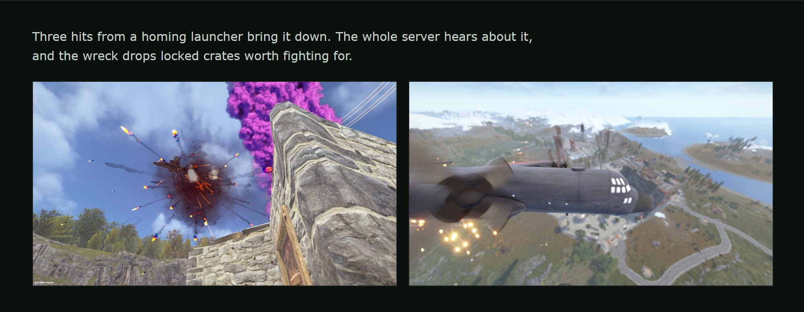
https://yanoee.github.io/ac130-media/about3/04-shoot-down.jpghttps://yanoee.github.io/ac130-media/banners/divider.png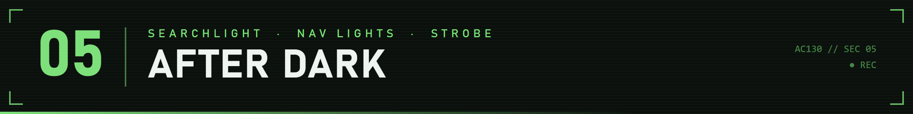
https://yanoee.github.io/ac130-media/banners/05-after-dark.png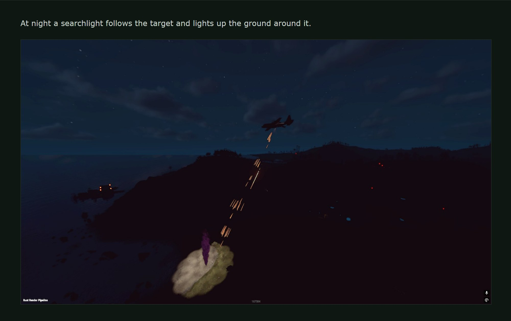
https://yanoee.github.io/ac130-media/about3/05-night.jpghttps://yanoee.github.io/ac130-media/banners/divider.png
https://yanoee.github.io/ac130-media/banners/06-made-for-your-store.png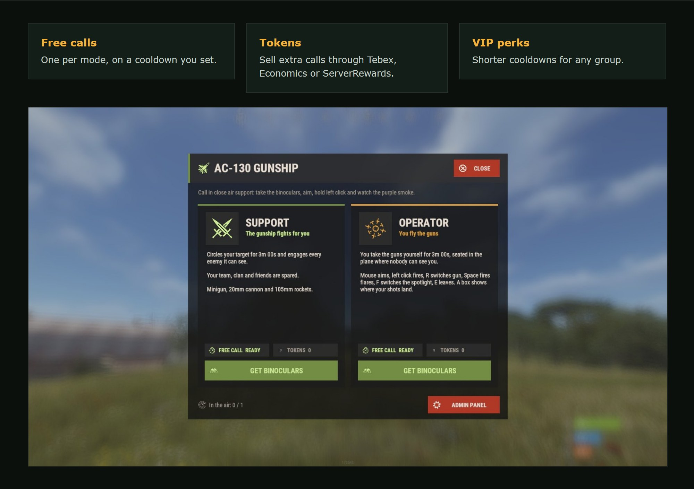
https://yanoee.github.io/ac130-media/about3/06-store.jpghttps://yanoee.github.io/ac130-media/banners/divider.png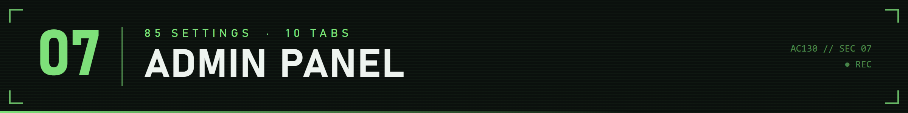
https://yanoee.github.io/ac130-media/banners/07-admin-panel.png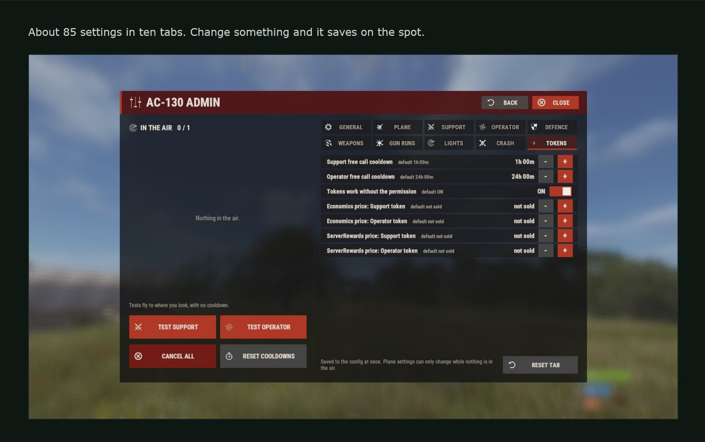
https://yanoee.github.io/ac130-media/about3/07-admin.jpghttps://yanoee.github.io/ac130-media/banners/divider.png
https://yanoee.github.io/ac130-media/banners/08-gallery.png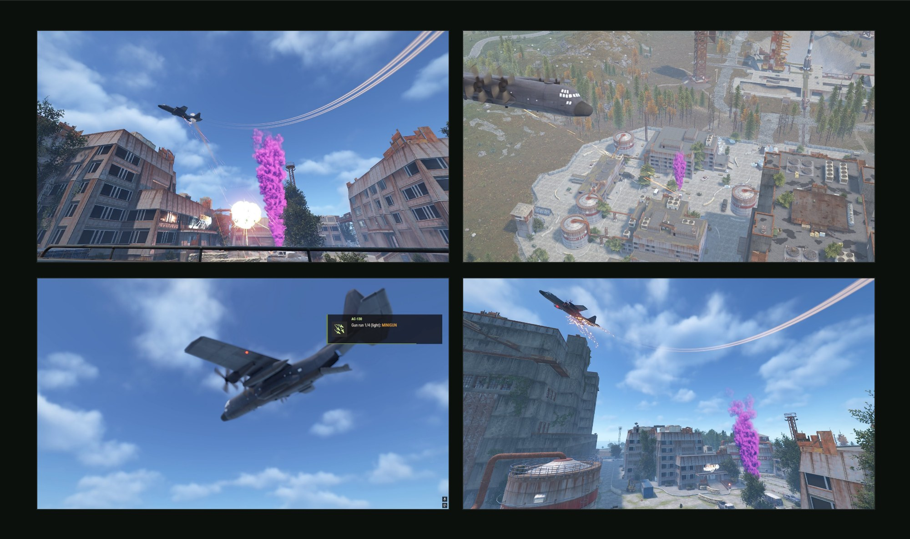
https://yanoee.github.io/ac130-media/about3/08-gallery.jpghttps://yanoee.github.io/ac130-media/banners/divider.png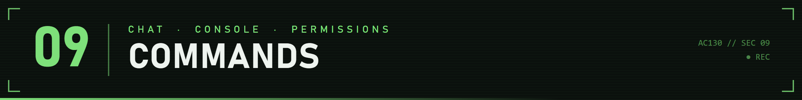
https://yanoee.github.io/ac130-media/banners/09-commands.png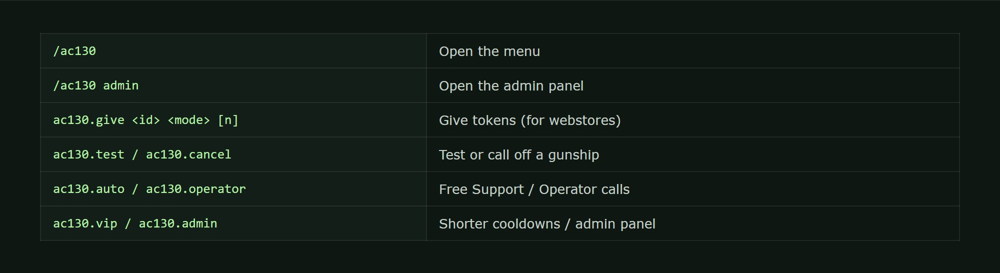
https://yanoee.github.io/ac130-media/about3/09-commands.jpghttps://yanoee.github.io/ac130-media/banners/divider.png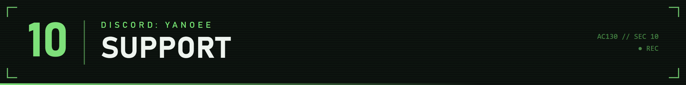
https://yanoee.github.io/ac130-media/banners/10-support.pnghttps://yanoee.github.io/ac130-media/about3/10-support.jpg